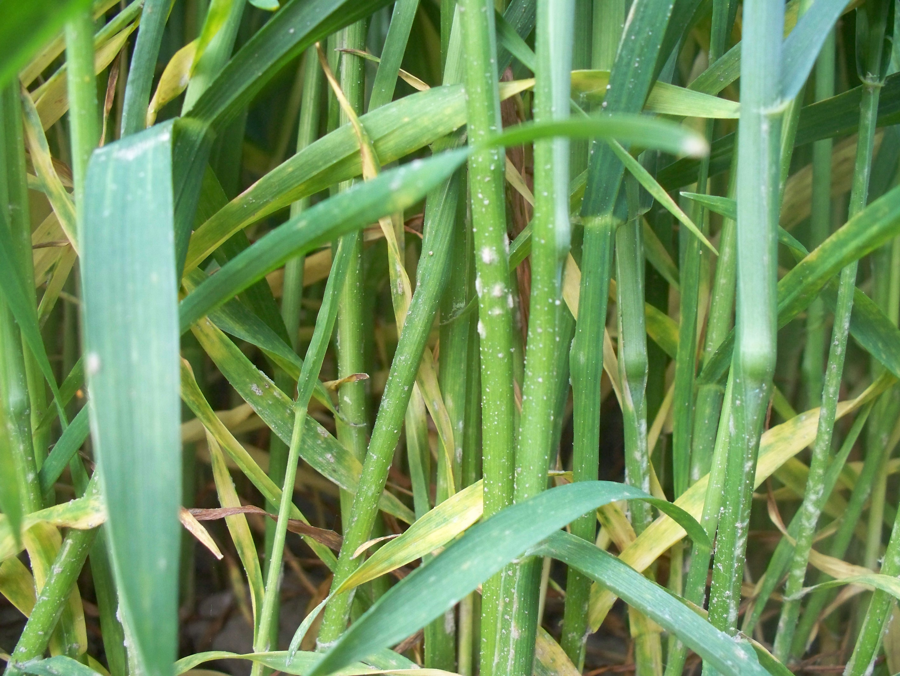

实验用虚构农药标签 禁止用于真实农业生产
PRODUCT B · 小麦杀菌剂
麦序霉素·穗护酮
小麦杀菌剂 悬浮剂 低毒（实验模拟分级）
一季最多2 次

第1步 先对照麦叶上的白斑
白色粉斑一块一块，后来可能连成片
白斑主要附着在麦叶表面，严重时叶片发黄、变干。泥点和药液残留也可能发白，要看斑块是否继续扩大。
叶面白色粉斑像落了白面白斑逐渐连片叶片发黄
陕西兴平2025年农技资料提示当地小麦白粉病发生，其最直观特征就是麦叶表面的白色粉状斑。适用时期：发病前或刚见病斑时。
2
配药容器：先确定装多少水
主示例使用15 L背负式喷雾器15 L 喷雾器15 L 水
本品药剂45 mL
10 L水桶加30 mL
15 L喷雾器加45 mL
16 L喷雾器加48 mL
20 L大桶加60 mL
3
测量容器：用哪样东西量出45 mL药
先用标准量具校准红线200 mL本品农药瓶
照红线取药整瓶不是一次用量
100 mL量筒
到45 mL线看红线就停
50 mL量杯
到45 mL线不用装满
200 mL一次性纸杯
到预先红线实验前先校准画线
已校准10 mL瓶盖
4满盖＋半盖先量清一盖容量
1先加一半清水
2按选中量具取45 mL药
3搅匀后补足15 L水
4当天配、当天喷完
不能混用波尔多液、氢氧化铜等含铜制剂
用药间隔再次使用至少间隔7天
用量和次数上限15 L水最多60 mL，本季最多2次
喷施重点
- 对小麦茎、叶喷匀；刚见病斑时及时处理。
- 上次效果差也不要自己加浓；先检查覆盖和是否已达到次数上限。
- 收获前20天内不要使用。
急救：接触皮肤或眼睛立即用大量清水冲洗；不适或误食时携带标签就医，不自行催吐。储存：原包装加锁存放，远离食品、饲料和水源。
真实照片：Agronom / Wikimedia Commons（CC BY-SA 4.0）；陕西适配依据：陕西省农业农村厅《兴平：小麦白粉病发生及防治要点》。